カワイ音楽教室
発表会
Drematoneウェスティホール
2001年7月27日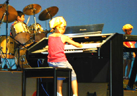
今年は、グランドピアノのでないステージ設定でしたので、
ピアノのソロとは別の日になりました。
曲数が少なくて淋しい気がしましたが、
とても素敵なアンサンブルやドリマトーンの演奏でした。
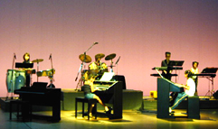
モーニング娘が大好きな子供たちで
LOVEマシーンを演奏しました。初めてのアンサンブル、初めてのドラム、
ドキドキの本番でした。
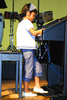
ひかりちゃんは、BASS（足）に
初挑戦、まだ足が届かないので、
立って演奏しました。
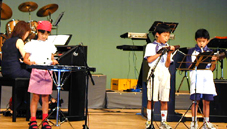
チャイルドアンサンブルコースの3人です。
今回は鍵盤ハーモニカとグロッケンを使い、
フレイジングや音色にまでこだわった
演奏をしようと頑張りました。
少ない息をたっぷり使って、
気持ちのこもった演奏でした。
くまのぷーさんより「おいっちにおいっちに」
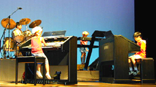
小さい力を合わせて、楽しいアンサンブル。
ずれそうになっても必死でこらえて、
なんとか合わせようとしている姿が、
とても一生懸命で良かったです。
初めての発表会で、左手も足もつけて、本当によく頑張ったるみちゃんです。
リズムに合わすのも、とっても難しそうだったのに、ばっちり仕上がりました。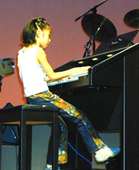
魔女の宅急便より
「元気になれそう」です。
となりのトトロより「風のとおり道」
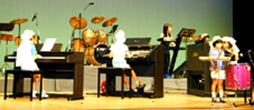
最初の練習では何回合わせてもバラバラで、
どうなることかと思いましたが、
さくらちゃんの太鼓に合わせて、
みんなの音が一つになって、とても感動でした。
「Asian Blue」
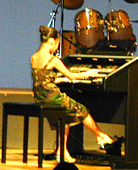
この曲はみさとちゃんが自分で選んだ
とてもお気に入りの曲です。
少し難しすぎるかと思ったのですが、
こんなにきれいに仕上がって、
満足そうな表情が印象的でした。
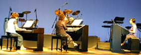
大人のアンサンブルチームも
2回目の発表会のステージです。
曲は「HEY JUDE」
音楽の楽しさや深さを感じながら、
前回よりも少し余裕をもっての演奏でした。
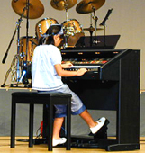
「天空の城ラピュタ」…今まできれいな曲を
弾くことが多かったのんちゃん、
今年はスケールの大きな曲に挑戦です。
難しいところがたくさんあって、
何度も繰り返し練習しました。「西の果て」
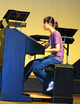
えみこちゃんも、きれいな歌うような曲を
得意としていましたが、
今年は演奏技術を磨こうと、
難しいアドリブや両足を使ったBASSに
挑戦しました。
リズムが複雑に混じり合う楽しさを
発見できました。
最後はB`Zの「ultra soul」
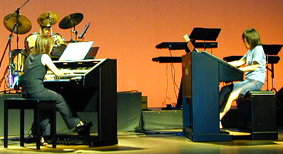
B`Zが大好きな
となえちゃんとさんきくんに先生が加わり
異色のアンサンブルチームを結成しました。
最初の練習で、既にスティックが折れるほど
練習していたさんきくんのドラムが
見事に決まりました。
「花市場」
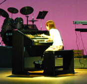
鈴木徳枝
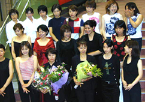
全部が終わってほっとして記念撮影です
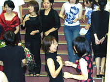
また来年も楽しい発表会ができるといいですね追記 ピアノの発表会の方は写真がなくて、
紹介できないのが残念ですが、
みんな緊張しながらも、
頑張って、練習の成果を発揮していました。